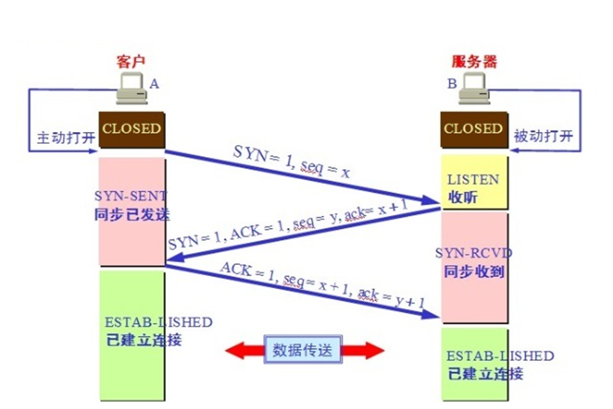
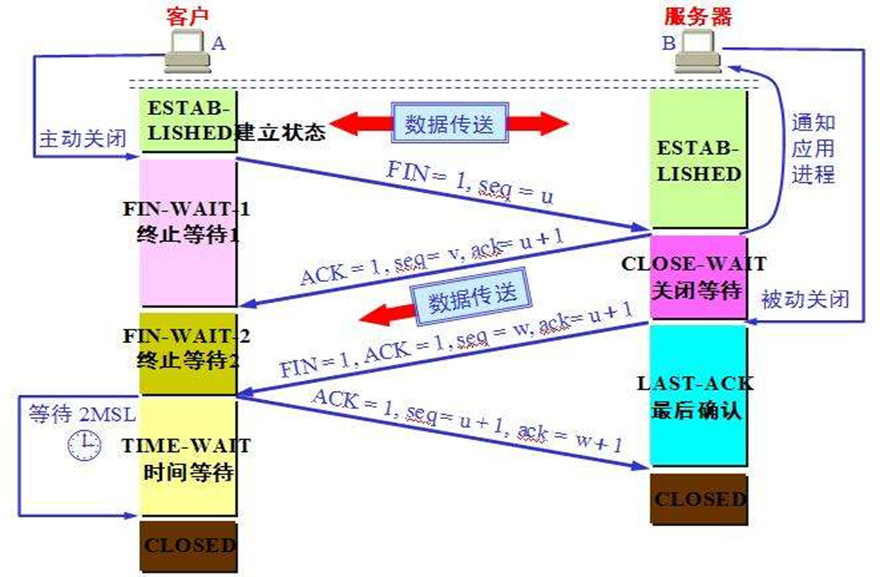

传输层
一、TCP和UDP协议
tcp协议：可靠传输，TCP数据包没有长度限制，理论上可以无限长，但是为了保证网络的效率，通常TCP数据包的长度不会超过IP数据包的长度，以确保单个TCP数据包不必再分割。
- 之所以可靠，不是因为有双向通路，而是因为有确认机制
udp协议：不可靠传输，报头部分一共只有8个字节，总长度不超过65,535字节，正好放进一个IP数据包。
- 没有确定机制，所以不可靠
- 相对tcp协议来说数据传输效率高
二、TCP三次握手和四次挥手
SYN：在建立连接时使用，用来同步序号。当SYN=1，ACK=0时，表示这是一个请求建立连接的报文段；当SYN=1，ACK=1时，表示对方同意建立连接
ACK：表示是否前面确认序列号字段是否有效。只有当ACK=1时，前面的确认序列号字段才有效
seq：序列号
- 保证接收端数据有序接收；
- 可以根据序号判断是否以前接收过该数据，用于去除重复；
- 判断数据的合法性；
- 序号机制结合 ACK 可以完成数据重传
ack：确认号（由对方序列号+1组成），表示希望对方发送什么样的东西给它


TIME_WAIT状态说明
- 主动关闭方，等待足够的时间确保最后一个ACK到达对端，也确保所有仍在网络中的旧报文都有足够的时间被丢弃或到达目的地，防止旧报文干扰新连接
- 一般来说，服务器是主动挥手的一方，因为服务器发完数据后，为了不占用自身的资源，就会断开连接，不过频繁的建立和关闭连接也会增加负担。在web服务中，HTTP/1.1默认使用了长连接，服务器通常是被动关闭的一方。
- 服务器是否主动关闭连接，取决于是否启用 keep-alive 和负载策略，在高并发环境下，保持连接复用比频繁建立、关闭连接更高效
- 如果服务器中TIME_WAIT状态比较多，可能说明在高并发中短连接请求数量多，或者被攻击，如syn洪水攻击
CLOSE_WAIT状态说明
- 被动关闭方，表示对方已经关闭连接，本端需要关闭，等待本地应用调用
close()关闭连接 - 如果服务器中CLOSE_WAIT状态比较多，说明应用层没有正确关闭 socket，或者是客户端频繁断开，而服务端未及时释放资源
总结：长连接中主动挥手通常是客户端。短连接中主动挥手通常是服务端。但实际谁主动关闭取决于应用层协议、业务逻辑和配置。例如长连接中，服务端也可以检测客户端断开失败而主动关闭；短连接中，客户端也可能因为异常中断被动断开。
为什么要三次握手？
- 确认双方的发送和接收能力：通过3次握手，客户端和服务器可以确认彼此都具备发送和接收数据的能力。这是建立可靠连接的基础
- 同步初始序列号：TCP协议通过序列号来标识发送的数据包，确保数据的顺序性和完整性。在3次握手过程中，双方会交换初始序列号，以便后续的数据传输能够正确地进行
- 避免已失效的连接请求报文段突然又传送到了服务端：这种情况可能发生在网络拥堵或者延迟较大的情况下。通过3次握手，服务端可以确认客户端的请求是有效的，而不是一个过时的请求
为什么不是四次握手？
三次握手已满足可靠性要求，额外步骤会增加延迟且无必要。例如：若第三次握手后服务器再发送ACK，客户端需第四次确认，形成冗余循环
为什么要四次挥手？
在关闭连接时，需要确保双方都完成了数据的传输和接收，以防止数据丢失或错误。如果只有三次挥手，可能会导致一些问题。 假设只有三次挥手，当客户端发送结束请求后，服务器收到后会发送确认，表示已收到客户端的结束请求。但是在此过程中，服务器可能还有未发送完的数据，如果直接关闭连接，那么这些数据就会丢失。因此，引入第三次挥手，服务器在发送结束请求前，先发送所有未发送完的数据，并等待客户端的确认。客户端接收到服务器的结束请求后，会确认并处理完未接收的数据，然后发送确认，表示自己已准备好关闭连接。 通过四次挥手，可以确保双方都能正确地结束连接，并处理未发送和未接收的数据，保证数据的完整性和可靠性。因此，关闭连接需要四次挥手。
为什么 TIME_WAIT 等待的时间是 2MSL？
网络中可能存在来自发送方的数据包。当这些数据包被接收方处理后，它会向对方发送响应，因此往返需要等待2倍的时间。就是确保最后一个ACK被服务端接收到了，如果没有接收到也要给足时间让服务器端的第三次挥手的FIN重新传过来。例如被动关闭方没有收到断开连接的最后一个ACK报文，就会触发超时重发FIN报文。另一方收到FIN报文后，会重发ACK给被动关闭方，这样来回就需要2个MSL的时间
三、半连接池和syn洪水攻击
半连接池：操作系统维护的一个队列，做完第一次握手后，客户端的tcp连接是进入到半连接池，随后操作系统从半连接池取出连接进行第二次握手，接着第三次握手，连接建立后从半连接池中移除。
SYN洪水攻击
- 建立大量的连接，将半连接池占满，即客户端变为ESTABLISHED状态，但不回复ack，服务端无法从SYN_RECD变为ESTABLISHED
- 一般来说，在服务器很少会看见SYN_RECD状态，如果看到很多，说明有可能遭受了攻击
其他攻击
- DDOS：分布拒绝服务攻击
- DOS：拒绝服务攻击
查看半连接池的数量：/proc/sys/net/ipv4/tcp_max_syn_backlog
可以提高半连接池的数量，可以适当防止SYN洪水攻击或高并发情况，但仅仅只是辅助手段，如果有大量的连接，不仅服务器自身资源消耗殆尽，也会导致网卡（过载，带宽限制），交换机（转发能力不足，MAC地址表溢出），路由器（路由表溢出）等硬件设备的性能瓶颈